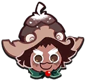
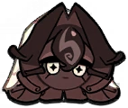
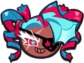
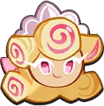

Pavlova é um Cookie Épico lançado na atualização Garden of Sweet Delights (v6.4) junto com Eternal Sugar Cookie. Ele é do tipo Atirador e sua posição é priorizada na Traseira retaguarda. Pavlova Cookie é um portador da Felicidade em nome dos ensinamentos de sua mestre, Eternal Sugar Cookie, espalhando romance e cuidando do paraíso de sua mestre - embora só faça o último quando quer.

Pinecone é um Cookie Épico lançado na segunda parte da atualização Stories by the Fireplace (v3.11). Elu é do tipo Bomber e sua posição é priorizada para a Frente. Elu apareceram pela primeira vez como um NPC no Warmer Together. Elu se considera um poderoso guardião da floresta, ajudando os animais da floresta a se preparar para a hibernação de inverno, resolvendo as discórdias entre os pássaros, e muito mais!
Candy Apple é é um Cookie Épico lançado na atualização Spire of Shadows (v6.0) junto com Shadow Milk Cookie. Ela é do tipo Bomber e sua posição é priorizada para o Meio. Ela costuma fazer esquemas ao lado de seu companheiro muito menos eufórico, Black Sapphire Cookie, ambos seguidores de Shadow Milk Cookie.
Stardust Cookie é um Cookie Super Épico que apareceu pela primeira vez na atualização Fateful Moonrise (v4.1) e se tornou jogável ao lado de Space Donut na atualização Across the Galaxy of Dreams (v4.2). Ele é do tipo Emboscada e sua posição é priorizada para o Meio. Stardust Cookie é um Cookie nascido de massa "imperfeita" imbuída de luz estelar sem nome, um subproduto imprevisto da massa impecável e infundida com o luar de Moonlight Cookie que os Magos descartaram no espaço.

Black Forest é um Cookie Épico lançado na atualização Match Made in Oven (v6.2) junto com Wedding Cake Cookie. Ela é do tipo Carga e sua posição é priorizada para a Frente. Ela é acredita por ser uma noiva sacrificial uma das bruxas, consideradas como "seres divinos" no contexto do jogo.
Sugarfly é um Cookie Épico introduzido pela primeira vez como um NPC na atualização Garden of Sweet Delights (v6.4) e que pode ser jogado ao lado de Hollyberry Cookie na atualização Battlefield of Passion (v6.5). Ela é do tipo Suporte e sua posição é priorizada na Traseira retaguarda. Sugarfly Cookie é um dos seguidores leais da Eternal Sugar Cookie e atua como guia para o Hollyberry Cookie e seu grupo quando o Pavlova Cookie fica relaxado.

Twizzly Gummy é um Cookie Épico lançado junto com Mala Sauce Cookie na atualização Interdimensional Super Mayhem (v2.2). Ela é do tipo Atirador e sua posição é priorizada na Traseira retaguarda. Ela desempenha um papel antagônico principal na história do Vale do Dragão Flamejante, sendo responsável por causar estragos e caos em vários universos e dimensões com seu "bando de desajustados".

Kouign-Amann é um Cookie Épico lançado na segunda parte da atualização The Triple Cone Cup Begins! (v4.4). Ela é do tipo Defesa e sua posição é priorizada para a Frente. Ela é uma renomada paladino da Academia dos Cavaleiros Crème que defende os Divinos. Este Cookie serviu como a campeã brilhante de sua escola na Triple Cone Cup, competindo contra Capsaicin Cookie e Prune Juice Cookie para provar a honra dos Cavaleiros.